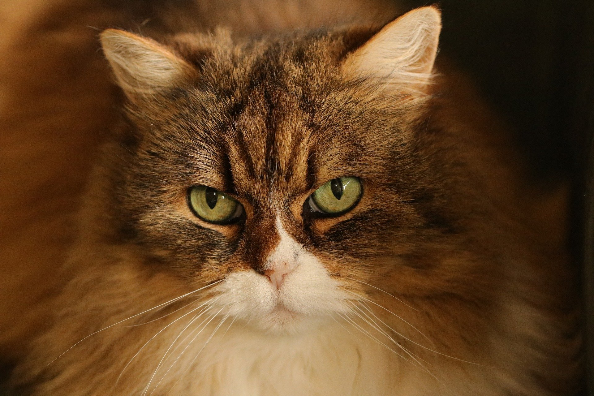
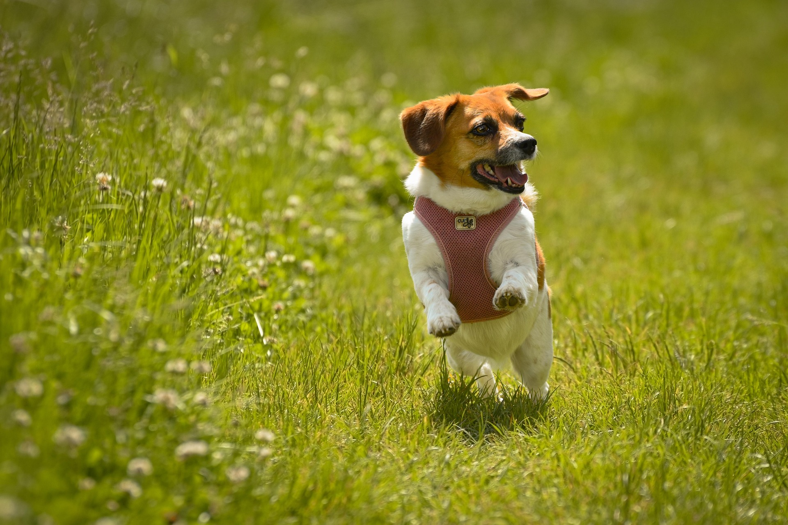
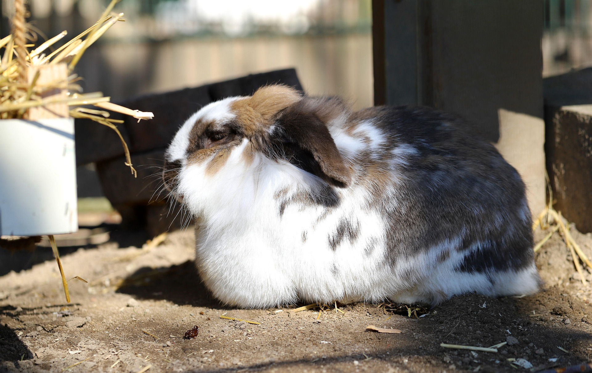

Adoptable Pets
Review our amazing animals below! Our adoption process involves filling out a form, a quick meet-and-greet, and a small adoption fee to support their medical care.

Bailey
Breed: Labrador Retriever Mix
Age: 2 years
Bailey is an energetic and loyal companion who loves belly rubs and long walks. She’s great with kids and ready to join an active family.

Milo
Breed: Domestic Short Hair
Age: 1 year
Milo is a playful, curious cat who enjoys sunny window spots and chasing toy mice. He’s fully vaccinated and litter trained.

Daisy
Breed: Beagle
Age: 3 years
Daisy is gentle, affectionate, and adores cuddles. She gets along well with other dogs and is happiest when surrounded by people.

Luna
Breed: Holland Lop Rabbit
Age: 10 months
Luna is soft, sweet, and surprisingly social. She’s spayed and ready to hop into a loving forever home.